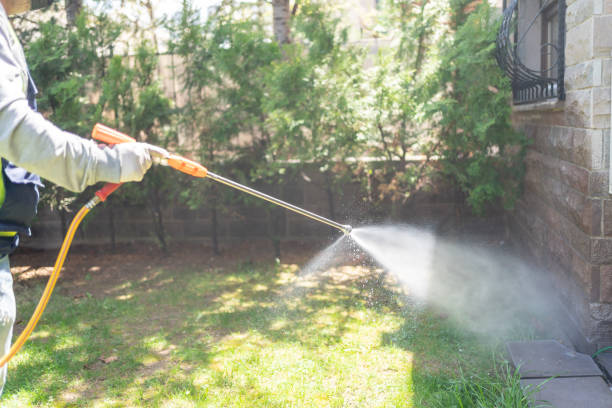

What is the most effective pest prevention strategy for Seattle residents?
Posted by on 2024-06-05
Pest prevention is a crucial aspect of maintaining a healthy and safe living environment. For Seattle residents, in particular, the damp climate can create ideal conditions for pests to thrive. From rodents to insects, these unwanted guests can quickly become a nuisance if not properly managed.
One of the most effective pest prevention strategies for Seattle residents is practicing good hygiene and cleanliness habits. Pests are attracted to food sources and clutter, so keeping your home clean and organized can go a long way in deterring them from taking up residence. This means regularly cleaning up spills, storing food in sealed containers, and disposing of garbage promptly.
Additionally, sealing off entry points into your home can help prevent pests from gaining access. This includes repairing any cracks or holes in walls, windows, doors, and foundations. By eliminating potential entryways, you can make it more difficult for pests to infiltrate your living space.
Another important pest prevention strategy for Seattle residents is proper landscaping maintenance. Overgrown vegetation near your home can provide hiding spots and pathways for pests to enter. Keeping trees trimmed away from your house and regularly mowing your lawn can help reduce the likelihood of pests taking up residence on your property.
Regular inspections by a professional pest control company can also be beneficial in identifying potential issues before they escalate. A trained technician can pinpoint problem areas that may be attracting pests and provide recommendations for how to address them effectively.
In conclusion, implementing a combination of good hygiene practices, sealing off entry points, maintaining your landscaping, and scheduling regular inspections with a professional pest control company are all key components of an effective pest prevention strategy for Seattle residents. By taking proactive steps to keep pests at bay, you can ensure a healthier and more comfortable living environment for you and your family.